Activity: Using OrientXpres
Click here to download the activity file.
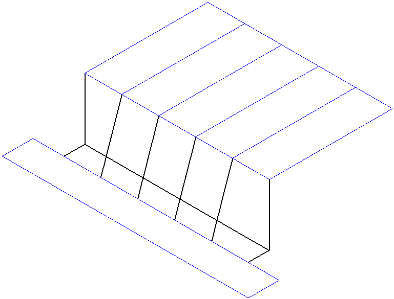
Overview
-
This activity guides you through the steps to create 3D line segments using the OrientXpres tool.
-
You are provided a file that contains two sketches (blue).
-
Create 3D line segments (black) connected to the sketch elements (blue).
Open orientxpres.asm.
Click Tools→Environs → Frame.
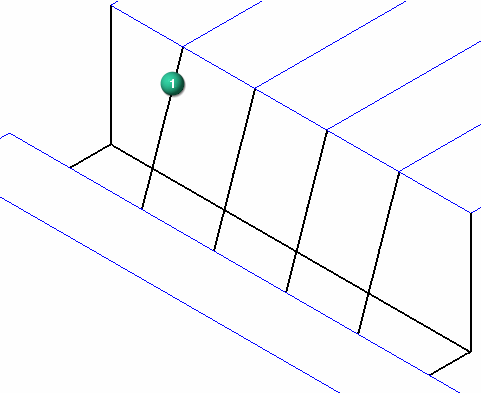
Click Home→3D Draw→3D Line .
To define the first point of the line segment, select the sketch line shown and make sure the endpoint symbol appears.
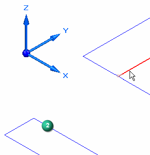
The second point of the line segment is attached to the cursor. At this point you could select other endpoints to connect to. However, in this step there is no endpoint to connect to. Lock to the YZ plane and then connect to line (2).
Drag the cursor over the OrientXpres triad and click when the YZ plane highlights.
The second point is now locked to the YZ plane.
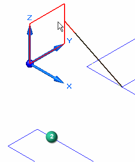
Select line (2) and then right-click.
The line segment (1) definition is complete.
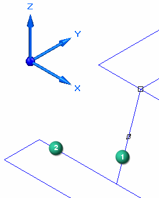
Notice from the top view that the line segment (1) is in the plane of line (3).
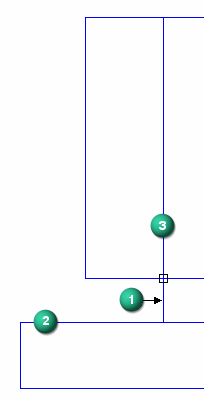
Place the three remaining line segments (1) using the same instructions.
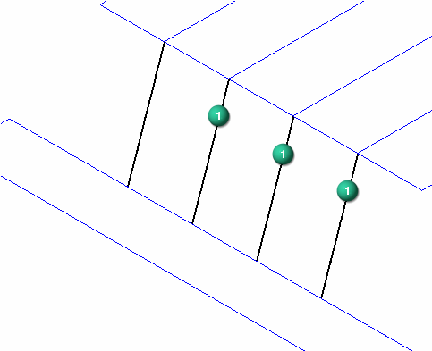
Place line segments (4) and (5) which use the OrientXpres axis lock.
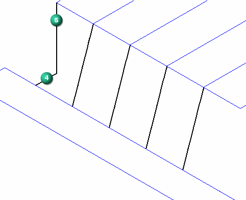
Select sketch line (6) and make sure the endpoint appears.
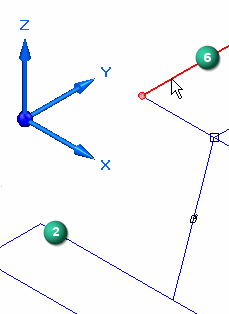
Lock the second point to the Z direction. On the OrientXpres triad, click the Z arrow.
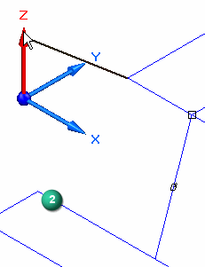
Drag the cursor and notice the line segment only travels in the Z direction. To define the second point, select line (2). This sets the length of the segment to be the same depth as line (2). Do not right-click.
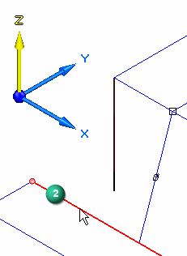
On the OrientXpres triad, click the Y arrow.
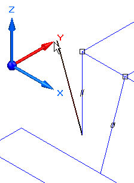
Drag the cursor and notice the line segment only travels in the Y direction. To define the second point, select line (2) and then right-click. This connects the segment to line (2).
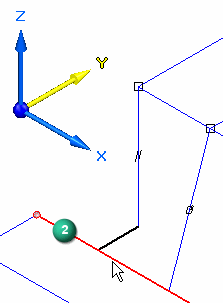
Place the two line segments (4) and (5) on the opposite end using the same instructions.
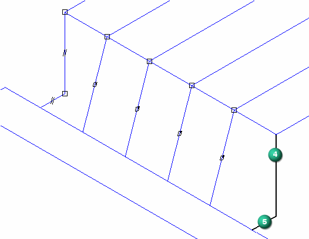
Place one last line segment without using the OrientXpres tool. The tool is not needed because there are two endpoints to connect to. Use endpoints of 3D line segments.
Place a line segment by selecting point (1) and then point (2). Right-click.
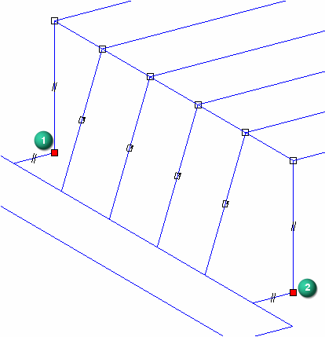
Notice the line segment (3) has no symbol attached to it. When the OrientXpres tool is used, an axis or plane symbol is attached to the line segment.
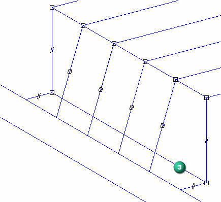
This activity is complete. Close the file and do not save.
In this activity you learned how to use OrientXpres to draw 3D line segments. Use the OrientXpres triad to control the direction of a line segment.
Click the Close button in the upper-right corner of the activity window.
-
The framework paths can be a combination of what?
-
What tool do you use to create 3D paths?
-
The framework paths can be a combination of what?
Sketches and 3D line segments
-
What tool do you use to create 3D paths?
OrientXpres